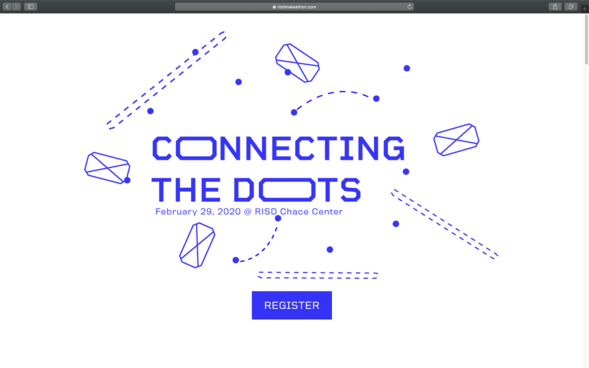

Nina Yuchi
IDSA Make-a-thon Website
Web design, web development, print design
One of the annual events that the RISD chapter of Industrial Designers Society of America (IDSA) hosts is the Make-A-Thon, a design-focused, hack-a-thon style event. In 2020, the Make-A-Thon theme was “Connecting the Dots”, focusing on social connections, physical distance, and digital journeys.
The branding was designed by Elyson Park. I designed and coded the website. Members of the RISD IDSA design team (Arayla Bakhet Baketebaike, Serene Lin) designed additional print and social media content.
View the live site here.
